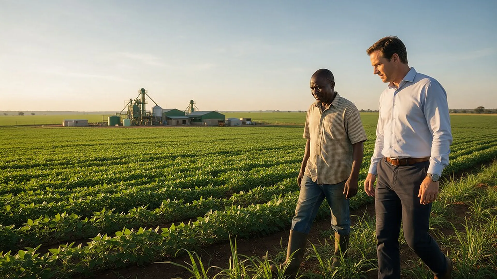

01
Manufacturing and Industrial Development

Projects that create or expand local productive capacity, including inputs and manufacturing value chains.

Chisi Capital Partners / Sectors
We concentrate on commercially viable opportunities that can strengthen production, value addition, trade and industrial capabilities.
Projects that create or expand local productive capacity, including inputs and manufacturing value chains.

Opportunities that transform agricultural output into higher-value products for domestic and regional markets.

Commercially grounded ventures that add value to mineral resources through processing and manufacturing.

Enterprises with credible demand for competitively produced goods that may replace imports.

Energy and enabling infrastructure that support viable enterprises and industrial activity.

Businesses positioned to serve regional customers and participate in cross-border supply chains.
Is there demonstrable market demand?
Can the project establish a sustainable commercial operating model?
Is there a plausible implementation and financing pathway?
Does the opportunity offer a compelling productive-sector value proposition?
Are relevant technical, legal and environmental considerations understood?